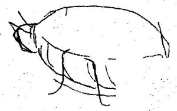

"Böceğin Psikanalitik Motifine Ayak Direyişi"
Philip Roth'un "Meme"sini okurken, edebiyatta grotesk unsurların bir anlamda var olan gerçek anlamlan dışında farklı alanlara çekildiklerini de öğreniriz. Tam seksen sayfa boyunca Kafka'nın "Değişim" isimli uzun öyküsündeki metamorfozun etkisi gibi görünen, ya da ona farklı bir alternatif oluşturan eser (aslında bunu eser boyunca saklamayan ve sürekli yineleyen yazar) grotesk unsuru, metamorfoz kavramının haricinde farklı bir alana açmaktadır. Eser, grotesk unsurun kurmaca gerçek içi yeni bir kurmaca gerçeğe dönüştüğü evrede şizofren sabuklamalara yer verecektir. Ben anlatıcı kendini 1.70 metre boyunda, 80 kilo ağırlığında bir meme gibi hisseder ve bunu dehşet bir anlatı gerçekliğiyle yapar. Roth, aşın grotesk edilenin kurmaca gerçekte aslında grotesk edilemeyeceğini, kurmaca gerçek içinde farklı bir ivme ile şizofren bilincin sabuklamaları ve gerçeğin kırılmaları ile verilmeye çalışılır. Bir anlamda ruh hastası ve dek olan ben anlatıcının gerçeği yitirmesi sonucu kendini bir meme gibi hissettiği ve öyle sandığı hususuna dikkatimiz çekilir. Grotesk gerçekliğe böylece farklı bir açıdan da bakmayı öğreniriz. Bu yol mesela, bir sabah kendini bir böceğe dönüşmüş olarak bulan Gregor Samsa'nın "Değişim" isimli öyküsündeki çilelerinin ve trajedisinin, gerçekliğe çok yakın uçlaştırılmış bu groteskin aslında, statik ve durağan olan ama sabuklayan bir ben-anlatıcının, ya da biyografilere kadar uzanacak olursak 'Yazarın Deliliği'ne (şizofrenisine) kadar götürülemez midir? Uçlaştırılmış grotesk Dali'nin, Picasso'nun, Paul Klee'nin ve diğer modern-avantgarde ressamların resim örneklerinde görülen durum ve pozisyon, onların gerçeği bir anlamda yitirdikleri, gerçekten normal olmadıkları anlamına gelecektir.
Roth'un 'Meme' öyküsünü baz alacak olursak, okuyucunun dikkatine sunulan bu 'memeye dönüşüm', aslında 'memeye dönüşüm' değil de, klostrofobik bir mekanda kendini bir meme olarak düşünen bir figürün durumu ile netlik kazanır.
Böylece, Gregor Samsa'da, bir böceğe dönüşmemiş de, eserde kendini bir böceğe dönüşmüş sanan şizofren bir hasta ile karşı karşıya olamaz mıyız şüphesi kafamızı kemirir. Bugüne kadar ben anlatıcının (Gregor Samsa) kendini böcek sanan ve gerçeği yitiren bir şizofren perspektifinden meseleye baktığım sanmaktayız. O yüzden Roth, edebiyata ve anlatıya farklı bir perspektiften bakmayı becerebilmektedir. Aynı bu perspektifi ya da mantığı, grotesk edilen söylem ve anlatı biçiminde tutumun şizofren bilincini Gogol'ün "Burun" öyküsüne, Swift'in "Guliver'in Seyahatleri'ne", Hildesheimer'in "Bir Bülbüle Nasıl Dönüştüm"üne, Roth'un "Meme"sine indirgediğimizde; anlamsız, absürd, masalsı biçimin karanlığını ve belirsizliğini atmış, onu biraz daha ayaklan yere basan reel alana kaydırmış oluruz. Gregor Samsa'nın sabahın erken saatlerinde kendisini böcek gibi bulmasından başlayınız, yine yatağın altında hizmetçinin onu sopayla dürtükleme anına, ölümüne kadarki süreç; yatağından kalkmak isteyen ama kalkamayan bir şizofren hastanın (kendini bir böcek gibi gören hastanın) trajedisinin, yine yatak altına büzülmüş bir vaziyette hizmetçinin onun yanına gelip, onu sopayla dürtüklemesine kadar giden bir evreyi kapsar. Roth'un "Meme"sinde olduğu gibi anne, baba, kız kardeş, doktorlar, (hemşireler hariç) Kafka'nın "Değişim"inde de vardır. Bunlar bir anlamda, kendini böcek gibi hisseden bir şizofrenin yardımına koşan, ona acıyan yakınlar ve kamu personelidirler. Roth, dikkatimizi metamorfozun gerçekliği-groteskin inandırılabilirliğinden; hastalıklı bir bedene giriş evresine çeker. İşte tam da bu nokta, bugüne kadar pek düşünülmemiştir. Nabokov'un, "Edebiyat Dersleri"nde bir böcekbilimci olarak Samsa'nın resmini ve türünü, tabii metin odaklı okumalardan çıkarıp çizmesi, bir anlamda burada 'şizofrenin kendini nasıl bir böcek gibi düşündüğünü' ilkesini aydınlatmaktan başka bir şey değildir.
Anti-masalcı gelenekten bakacak olursak masalda her yaratığın bir etki ile istenen ve arzu edilen varlığa dönüşümü (örneğin bir öpücükle kurbağanın krala dönüşü) ve her yaratığın bir bağlamda insana dönüşümü; Kafka'nın "Değişim"inde eksik kalmıştır. Hiç bir etki böcek Samsa'yı tekrar insana dönüştürememiştir. Bu yüzden Değişim, bir anti- masal ürünüdür. Tezimizi eksik kılacak enstantaneler belki de Gregor Samsa'nın tekrar böcekten insana dönüşememesi edimidir. Roth "Meme"sinde bu dönüşümü masalcı geleneğine uydurmuştur. Kafka, Samsa'yı böcek şeklinde ve böcek kılığında bırakmayı yeğlemiştir. Eserde okuyucuların gözü önüne serilmese de, “Değişim”in Kafka tarafından (insan tarafından) yazıldığını düşünecek olursak "Değişim" öyküsünün önünde-ortasında-sonunda Gregor Samsa değil Franz Kafka vardır. Ancak bu şekilde rahatlayabilir, rahat bir nefes alabiliriz.
Otto Rank'ın, "Böceğin Psikanalitik Motifine Ayak Direyişi" isimli bir çalışmasının olduğunu öğrendiğimizde böceğe psikanalitik bakışın daha da önem kazandığım, ya da bir metafor olarak böceğin derinlemesine ele alınabileceğini düşündük.
Böceğin dönüşüme uğrayan bir 'Insectus' olarak motifliğini değil, kendinde, kendi varoluşunda neyi ifade ettiğini araştırmaya koyulduk Böcek nedir? Ne menem şeydir? Varlığı neye dayanır? Hep lanetli ve kötü, sürüngen ve olumsuz anlamlar mı içerir? Varlığı insana neden tiksinti verir? Bu sorular gündelik hayatın insanın kendi yaşantısının bir yerlerine eklemlendiğinde 'Böceğin Psikanalitik Motifi', 'Böceğin Gündelik Yaşantımızdaki Yeri', 'Böceğin Varoluşu' daha iyi anlamlandırılabilir.
II.
Şairler biraz da böcekbilimcidir. Buna da şaşmamalı.
İlhan Berk
Mitlerde, masallarda ve öykülerde tanrıların veya insanların hayvanlara doğa üstü dönüşümleri gizli anlamlar içermektedir. Apuleisis'in "Dönüşüm" veya "Altın Eşek"inden, Franz Kafka'nın "Dönüşüm"üne veya Eugene Ionesco'nun "Rinoceros"una kadar dönüşümlere insan-oluşluk ve insanın kendi sorunlarına ilişkin göndergelerin derinliği ile bakılmalıdır. Amaçlı dönüşümler ya da bir amaca dayandırılan dönüşümler olduğu gibi; Tanrıdan insana, insandan böceğe ya da herhangi bir yaratığa dönüşümler amaçsız bir tabana da oturabilir. Herhangi bir istek, şiddetli bir arzu, ödüllendirme, kurtarma veya cezalandırma dönüşümün farklı bir cephesini oluşturur. İnsan bilinci dönüşen, metamorfoza uğrayan yaratıklarda hala devam ettiğinden bunlar öç alma duygusu, kıskançlık duygusu ile yanıp tutuşurlar. Dammrichler, Jüpiter'in cinsel amaçlı maceralarda bir kartala, bir boğaya ya da bir kuğuya dönüştüğünü dile getirir.[141]
Kıskanç Juno, Kalliste'yi Jüpiter'in sevgisini kazandığından bir dişi ayıya çevirir. Philomena, İtys'i öldürür ve ceza olarak bir bülbüle dönüştürür. Bireyin bedeni ile bir ayıya ya da bir kurt adama dönüşmesi (Prosper Merimee'nin "Lokis"inde ya da Hermann Lons'in "Werwolf"unda olduğu gibi) içteki saldırganlığın, saldırgan güdünün bir dışavurumu ve dehşetin simgesidirler.[142]
Değil mi ki her hayvanın karakteri masallarda mitlerde farklı farklıdır. Ortaçağda gelişen fabllarda ve hayvan masallarında aslan kralken ve kuvveti temsil ederken, tilki hileyi, kurt deliliği ve istenç hırsını; horoz ve tavuk kendini beğenmişliği, ayı, gücü ya da enerjiyi, an çalışkanlığı temsil eder. Daemmrichlere göre, geyikler takip edildiğinde kişioğlunu ya ruhlar dünyasına ya da ölüler alemine götürür. Bu fabllarda tabii ki insana ait unsurlar, karakter örneklemeleri, onu bırakın insanın yaşantısına ait derin göndermeler bulunur. Aslına bakarsanız fabllar ters çevrilmiş gerçeklikten başka bir şey değildirler.
III.
Bir böcek değil de, bir dünyaydı sanki.
İlhan Berk
Sözlüklere baktığımızda böceklerin (Insekta); hava ile soluyan oynar bacaklıların (Anthropoda) bir sınıfı olduğunu görüyoruz. Böcekler, aslına bakılırsa kara ve hava hayvanlarıdır. Meydan Larousse böcek için "Trake sistemiyle solunan, başı göğüs kısmından biraz ayrı, göğsü üç halkadan yapılmış (her birinden bir çift bacak çıkar) eklembacaklı küçük hayvan" tanımlamasını yapar.[143] Meydan Larousse bizlere böcek dünyasının ayrıntılarım iyi verdiği ve tanımladığı için bu bilgilere başvurmakta fayda görüyoruz:
Böcekler veya altı bacaklılar sınıfı veya üst eklembacaklılar, bölümün bir parçasıdır. Böcekler genellikle karada yaşar. Vücut eklemli bölütlere ayrılmıştır. Üzerleri 'kitin' adı verilen dayanıklı bir maddeyle kaplıdır. Vücut üç kısma ayrılır: baş, göğüs, karın... Başta bir çift duyarga, gözler, üç sade göz ye üç çift ağız parçası bulunur. Göğüs üç bölütten meydana gelir, ön göğüs, orta göğüs, alt göğüs. Göğsün her bölümünden birer çift kanat ya da kanada benzer organ çıkar. Karın on iki bölümden meydana gelir. Belli başlı iç organları kapsar. Her bölüt bir yarım daire üstte, bir yarım daire altta olmak üzere iki parçalıdır. Böcek türleri pek çoktur. Bir milyona yakın tür tespit edilmiştir. Bunların tür sayısı, bitkiler de dahil diğer bütün canlıların türünden fazladır. Birinciler kanatsızdır pek az başkalaşma geçirirler veya hiç geçirmezler, ötekiler kanadı böceklerdir ve başkalaşma geçirirler.[144]
Meydan Larousse'a göre insana doğrudan doğruya faydalı sayılan bazı böceklerle (balansı, ipek böceği, kırmız böceği, bazı mazı böcekleri) zararlı bir kısım böcekleri yedikleri için tarıma faydalı sayılan bazı böcekler (pislik böceği staphlinus, uğur böceği, kum böceği, tırtıl avcısı, çeşitli zar kanatlılar) dışında hemen hemen bütün böcekler zararlıdır. İnsanlara ve hayvanlara doğrudan doğruya saldıran böcekler pek çoktur. Bitler, pireler ve sokucu sinekler insan ve hayvan hastalıklarının taşınmasında çok önemli rol oynar. Bu hastalıkların birçoğu afet şeklini alır. Vebayı, tifüsü, sarıhummayı ve uyku hastalığım saymak yeterlidir.[145]
Yine Meydan Larousse'dan edindiğimiz bilgiye göre modern böcekbilimcilik Malpighi'nin ipekböceği üzerindeki araştırmaları ve Suarremardemm'in böceklerin başkalaşımı ile ilgili gözlemleriyle 17. yüzyılda başlar. 18. yüzyılda Frisch ile Roesel von Rosenhof, eklembacaklılardan birkaç hayvanın geçirdiği değişiklikleri ve bunların yaşantılarını açıklarlar. Ama bu yüzyılın en büyük gözlemcisi Reamur'dur. Onun yazdığı 'Böceklerin Tarihi Konusunda Araştırmalar' adlı eser, böcekbilimin şah eserlerinden biridir. İsveç'te Charles de Geer onun izleyicilerindendir. Böcekler hakkındaki araştırmalara, o zamana kadar eksik olan ortak temeli, ünlü bir doğa bilgini Linne sağlamıştır. Linne herkesçe kabul edilen bir sınıflandırma yapmış ve çift isimli bir adlandırma usulü koymuştur. 19. yüzyıl sonunda Geofroy, kırk kanatlıların bacaklarına, bacaklarındaki eklem sayısına, fabricius ağız parçaların benzerliğine göre sınıflandırma yapmışlardır. Tabii familyaların yaratıcısı olan Latreille böcekbilimine yakınlık (akrabalık) kavramım sokmuş ve bugünkü sistematik böcekbilimini kurmuştur. Jean Henri Fabre, ilk defa gayet akılcı bir dille kaleme aldığı gözlemleriyle, halkı, böceklerin yaşantısıyla ilgilendirmeyi becermiştir. Bugün böcekbilimi tabii bilimlerin en çok ilgi çeken kollarından biridir. Tarım alanındaki uygulamaları, büyük önem kazanmıştır.[146]
IV.
İpekböceği 2816 kaslıdır diye yazar Lyoret. Böyle daha bir yığın böceğin kıl damarlarıyla ilgilenir; onların kütüğünü tutar. İpekböceğinin kaslarının kaç tane olduğunu bulduktan sonra da kör olur.
İlhan Berk
Bir böcekbilimci olan ve kendine has bir kelebek türü bulan Vladimir Nabokov, "Edebiyat Dersleri"nde Kafka'nın "Değişim" isimli eserinde Samsa'nın nasıl bir böceğe dönüştüğünü metinden hareketle çizimlerle gösterir. Nabokov, Kafka çalışmalarını yaparken Kafka'nın böceği ile ilgili yapılmış psikoanalitik çalışmalarla alay eder. Bu eser (Edebiyat Dersleri) dönüşüm üzerine her ne kadar derinlikli analizler yapsa da, bu çözümlemeleri Freudyen bir bulguya göndermek, ya da bir iki sebebe dayandırmak Nabokov'a ağır gelir. Bu arayışları yapanlara da ilginçtir (her ne kadar kendisi de yapsa da) 'şarlatan' ismini verir:
Dahası bunlar mitolojik simgecilikte çocukların haşarat ile simgelediğini (bundan da kuşkuluyuz) öne sürerek işi Kafka'nın böcek simgesini Freud'cu çıkış noktalarına uygun olarak oğulu temsil etmekte kullandığını söylemeye vardırıyorlar. Böcek, Kafka'nın babasının varlığı karşısında kapıldığı değersizlik duygusunu tam anlamıyla özetlemektedir. Ben (Nabokov A.S.C.E.) burada haşaratla ilgileneceğim, şarlatanlarla değil, onun için bu saçmalığı reddediyorum.[147]
Kafka'nın "Değişim" isimli eserinde Gregor Samsa'nın böceğe dönüştükten sonra "Belki de yüz defa denedi bu işi; titreyen bacaklarım görmemek için gözlerini yumdu hep" cümlesini "Bildiğimiz böceklerin göz kapaklan yoktur, bu yüzden de gözlerini kapayamazlar, bu insan gözlü bir böcek..." açıklamasını yaparak Kafka'nın Böceği'nde nasıl da dikkatli gözlemler yaptığım okuyuculara gösterir.[148]
Yukarıda da değindiğimiz gibi Nabokov, Gregor Samsa'nın nasıl bir böceğe dönüştüğünü dikkatli irdeler:
Peki acaba zavallı Gregor, o kılkuyruk gezgin satıcı, birden bire ne tür bir haşarata dönüşmüştür? Anlaşıldığı kadarıyla böceklerin, örümceklerin, kırkayakların ve kabukluların ait olduğu 'eklembacaklılar' (anthropoda) sınıfına dahildir. Eğer başta sözü edilen 'sayılmayacak kadar çok bacak' altıdan fazla bacak anlamına geliyorsa, Gregor hayvanbilimsel açıdan böcek sayılmaz. Ama ben derdim ki, sırtüstü uyanıp da havada titreşen altı tane bacağı olduğunu fark eden bir adam, altı bacağa sayısız denebileceği duygusuna kapılabilir. Demek ki Gregor'un altı bacağı olduğunu, onun bir böcek sayılması gerektiğini söyleyeceğiz.[149]
Samsa'nın ne tür bir böceğe dönüştüğü hususunda Nabokov'un gözlemlerine ve kayıtlarına başvurmaya devam edelim. Aynı zamanda Nabokov'un "Edebiyat Dersleri"nde Kafka-böcek çözümlemelerini metinden alıp bir böcek uzmanının gözüyle Samsa'nın izini takibe koyulalım:
"Bir sonraki soru ne böceği? Yorumlar 'hamam böceği' diyor. Bu da saçmalamak oluyor tabii. Hamamböceği gövdesi yassı, geniş bacakları olan bir böcektir. Gregor ise kesinlikle yassı değildir, alttan ve üstten, yani sırttan ve karından bombelidir, ayaklan da ufaktır. Yalnızca bir açıdan hamam böceğini andırır, rengi kahverengidir. Hepsi bu. Bunlar dışında bölük bölük ayrılmış son derece şişkin karnı ve üzerinde kanat yerleri belirgin-olan sert yuvarlak bir sırtı vardır. Meyve böceklerinde bu kanat yerlerinin içinde gerektiğinde açılabilen ipeksi, küçük kanatlar gizlidir. Ve bunlar el yordamıyla uçan böceği millerce, millerce uzağa götürür. Gariptir, böcek Gregor, sırtının sert kabuğu altında kanatlan olduğunu hiçbir zaman fark etmez. (Bu bence yaşamınız boyunca bir hazine gibi saklamanız gereken bir gözlem Kimi Gregor'lar, kimi Joe'larla Jane'ler kanatlan olduğunu bilemezler) Bunlardan başka güçlü çeneleri vardır. Bu uzuvlarını arka ayakları, yani üçüncü ayak çifti, (küçük, güçlü bir çift) üzerinde doğrulup anahtarı kilide döndürmekte kullanır ki, bu da bize üç ayak kadar olan vücut uzunluğunu verir. Hikaye boyunca, yeni takımlarını -ayaklarını, duyargalarını- kullanmaya yavaş yavaş alışacaktır. Bu kahverengi, şişkin köpek iriliğindeki böcek çok enlidir. Görünüşü aşağı yukarı şöyle olmalı:

Almanca metinde, yaşlı temizlikçi kadın onu 'Bokböceği' anlamına gelen Mistkafer' olarak çağırır. Kadıncağızın ona bu adı yakıştırmasının bir dostluk gösterisinden ileriye gitmediği açıktır. Bilimsel açıdan bokböceği sayılmaz. Sadece büyük bir böcektir.[150]
Samsa'nın böcekleşme süreci ya da böcek olmak için değişim nedenleri o kadar da garip görülmemelidir. Aklı başında yorumculardan biri (Paul Landsberg-"Kafka Sorunu") şunları söylemektedir:
Yabancı bir ortamda uykuya dalmışken, uyandığınızda bir an şaşalamanız, birden bir gerçek dişilik duygusuna kapılmanız doğaldır, böyle bir yaşantı da varoluş biçimi herhangi bir süreklilik duygusunu imkânsız kılan gezginci bir satıcının sık sık karşılaştığı bir durum olsa gerek Gerçeklik duygusu sürekliliği süreye bağlıdır. Aslına bakılırsa böcek olarak uyanmak, Napoleon ya da George Washington olarak uyanmaktan pek farklı değildir. Öte yandan yalıtılmışlık, gerçeklik denen şeyin dışında olmak; bunlar aslında hep sanatçıyı, deha sahibi insanı, kaşifi tanımlamakta kullanılan niteliklerdir. Düş ürünü böceğin çevresini saran Samsa ailesi dehayı çevreleyen vasatlıktan başka bir şey değildir.[151]
Nabokov, Franz Kafka'nın "Değişim"inde Samsa ve ailesine ilişkin çok güzel tespitlerini şöyle sürdürür:
Ailenin üç üyesi onun odasına açılan kapılan çalar ve onunla sırasıyla koridordan, oturma odasından ve kız kardeşinin odasından konuşurlar. Gregor'un ailesi onun asalaklarıdır, onu sömürür, içten içe kemirirler. Onun "böcek olmak için kaşınmasına" neden olan insanlardır. Gregor'un ilk bakışta sert ve sağlam görünen ama sonuçta, hasta insan bedeni kadar dayanıksız olduğu ortaya çıkan böcekkabuğunu yapan ihanet, eziyet ve iğrençlikten koruma yolundaki dokunaklı arzusudur. Üç asalaktan -annesi, babası, kız kardeşi- hangisi en acımasızdır? Önce babası olduğu sanılabilir. Ama en kötüleri o değildir; en kötüleri Gregor'un en çok sevdiği, ama öykünün ortasındaki mobilya sahnesinden başlayarak Gregor'a ihanet eden kız kardeşidir.[152]
Vladimir Nabokov Samsa'nın insansı duygu durumdan ağır ağır böcekleşmeye doğru başlamasını, değişimin yataktan kalktıktan sonra bile devam etmesini, insanların Samsa'yı nasıl da işe gitmesi için farklı odalardan sıkıştırmasını şöyle açıklar:
Aile izleği ya da kapılar izleği yeniden ortaya çıktığında hala didinip durmaktadır ve bu sahnenin sonunda küt diye yataktan aşağı düşer. Konuşmalar biraz Yunan tragedyasındaki koroyu andırır. Gregor'un çalıştığı yerden, istasyona neden gelmediğini öğrenmek üzere bir adam yollamışlardır. İşe gelmeyen memuru denetlemekte gösterilen bu acımasız çabukluk kötü bir rüyanın bütün özelliklerini taşır. İkinci sahnede olduğu gibi burada da kapı arkasında konuşmalar tekrarlanır. İzlenen sıraya dikkat edin: baş katip Gregor'la soldaki oturma odasından, Gregor'un kız kardeşi Grete, kardeşiyle sağdaki odadan konuşmaktadır, anne ile baba da oturma odasındaki başkatibe katılırlar. Gregor henüz konuşabilmektedir. Ama sesi giderek zayıflar ve sonunda konuşması anlaşılmaz olup çıkar. (Yirmi yıl sonra James Joyce tarafından yazılan Finnegans Wake'de, birbiriyle bir ırmağın iki yakasından konuşan çamaşırcı kadınlar giderek güdük bir karaağaçla bir taş parçasına dönüşeceklerdir. Gregor sağdaki odada bulunan kız kardeşinin neden ötekilere katılmadığım anlayamaz.[153]
Samsa'nın anoreksiya başlangıcı sayılacak insansı tat anlayışı ile böceksi tat anlayışı arasındaki farkındalık duygusuna nasıl vardığını da yine Nabokov'un tespitleri ile verelim:
Babasıyla çarpışmasında ince bacaklarından birisi zedelenmiştir, giderek iyileşecektir, ama bu sahnede Gregor topallar ve hiçbir işe yaramayan bu bacağını ardından sürükler. Büyük böcek olmasına büyük böcektir, ama insandan daha küçük ve çeviktir. Gregor süte yanaşır. Heyhat, hala insan aklı olan aklı süte yumuşak beyaz ekmek doğranarak hazırlanmış bu tatlımsı paparayı düşünce olarak benimserken böcek midesi ve böcek tat duygusu bu memeli besinini reddeder. Çok aç olmasına rağmen süt midesini bulandırır ve tekrar geriye, odasının ortasına döner.[154]
Bir kez daha tekrarlamakta fayda vardır, Vladimir Nabokov, Kafka'nın 'Değişim'inde Samsa'nın böcekleşmesine ilişkin belki de en derin incelemeyi yapanlardan biridir. Her ne kadar Samsa'nın böcekleşmesini psikanalitik ya da Freudyen çözümlemelerle açıklamamaya çalışsa da, psikoloji ve psikiyatri hele de bu dalın, edebiyata sarkan bölümleri tarih boyunca gizli kalmış duygulan, düşünceleri, bilinçaltı saklı güdüleri gün ışığına çıkarmaya çalışmıştır. Değil mi ki Nabokov'un yapısalcı çözümlemesi bile bir aşamadan sonra psikanalitik bir çözümleme olarak değerlendirilebilir. Her ne kadar kendisi yaptığı çalışmayı farklı bir değerlendirme kategorisine soksa da biz araştırmacılar için Nabokov'un metin odaklı bu derin çözümlemeleri vazgeçilmez bir kaynaktır.
Her şair bir böcekbilimcidir. Dünyada bir lanetli beden gibi yaşamanın kurallarından biridir bu. Şair de böcek gibi bir sürüngendir. Havasız, rutubetli, kapak yerlerde yaşar ve yatar. Böcek-bilimcinin böcekleri varsa, şairin de böceklere benzer kelimeleri vardır. Böcekler hayatta ne denli bir ayrıntıyı, bir dışarıda-oluşluğu simgelerse, iyi kelime ve imge avında olan şair de yaşamın ücra kalmış yerlerindeki kelimeleri kovalar. Değil mi ki her kelime bir böcektir ve böcek Nemrut'un beynini nasıl kemirmişse, kelimeler de şairin beynini allak bullak eder.